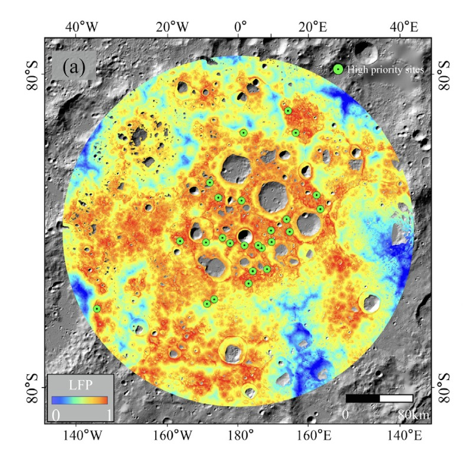

Can you imagine being able to stay on the Moon for extended periods of time? To develop lunar bases and networks, extensive research is required to analyze various landing sites for scientific benefit and safety. The Landing Feasibility Probability (LFP) model, an algorithm developed by Tongji University in Shanghai, China, can accurately pinpoint lunar landing locations that are optimized for both scientific value and engineering safety (Y. Feng et al., 2025). The report explains the process of teaching the LFP model how to select landing sites. Additionally, it reviews the 120 selected sites at the lunar south pole that scientists examined and that can be implemented in international lunar missions.
The Moon's south pole is the next step for lunar exploration because of the presence of water ice in lunar soil, geological diversity, and mineral resources; however, the lunar south pole's extreme topography and variability in solar illumination has prevented human exploration thus far. NASA's Artemis III mission and China's Chang'e-7 mission have both targeted the lunar south pole, so having accurate landing-site data is extremely urgent.
The LFP model evaluates the viability of potential landing sites in terms of surface slope, average illumination, temperature in polar craters, flat area size, and communication potential. To train the LFP model, experts compile a training data set, which the model analyzes to learn how to select scientifically beneficial and safe sites. To create the training dataset, landing site selection experts were consulted to provide expert judgment on various regions with both adequate and insufficient landing-site examples.

The LFP model is given 23 quantified factors, and the machine-learning algorithm then chooses the most critical factors affecting the feasibility of the landing site. Then, the LFP model creates a map of the entire lunar south pole, overlaying its calculated landing feasibility probability as a value between 0 and 1. In total, the model identified 120 landing sites, which make up only 0.6% of the lunar south pole, demonstrating the difficulty of finding safe landing locations.
On the LFP color scale, blue represents low LFP values and red represents locations with a high LFP value. The green circles signify the high-priority sites, which are landing locations that all have an LFP greater than 0.83 and are at least 2 km2. The optimal landing areas, indicated by a red tint and larger than the green high-priority sites, are near craters at both the crater edge and in between craters. High LFP scores have a strong correlation to proximity to water ice, which allows for more scientific research and habitation probability.
Before the LFP model was developed, many space scientists worked together to select optimal lunar landing sites; however, scientists optimized different selection factors. The LFP model addresses this issue by reporting the prevalence of all selection factors at landing sites, allowing experts to have a more complete understanding of each site and helping them reach consensus efficiently.
The LFP model's ability to account for all selection factors demonstrates its "capability for multi-objective optimization in the context of lunar landing site selection" (Y. Feng et al., 2025). The LFP model also takes into account the necessity of meeting specific thresholds for each selection factor. These thresholds were derived from expert training sets, ensuring all selected sites maintain high feasibility and performance across all 23 factors. For example, the minimum area for each site is 2 km2, providing adequate space to build a lunar base.
The selected sites will be used to construct lunar bases and develop a network of lunar-based observatories, allowing humans to monitor Earth and explore deeper into space. Within lunar base networks, close proximity of bases increases safety, ensuring that if one site is in danger other neighboring sites can help address the issue. The LFP model identified seven clusters of landing areas for future lunar base networks, where the maximum distance between any two adjacent selected sites is only 25 km, making exchanges between bases feasible.
The 120 landing sites identified by the LFP model will allow scientists to focus on analyzing the scientific potential and landing safety of individual sites. The ultimate goal for site selection is feasibility of long-term exploration to develop lunar bases and a lunar network. In the future, the LFP framework can be implemented in site selection for missions toward Mars, Jupiter, Mercury, and various asteroids.
Works Cited
Feng, Y., Li, P., Li, H., Liu, Y., Xi, M., Wang, R., Chen, S., Tang, P., Cao, Y., Huang, Q., You, Q., Liu, S., Ye, Z., Xu, Y., Xu, X., Wang, C., Jin, Y., Liu, S., Xie, H., & Tong, X. (2025). Navigating the lunar frontier: one hundred landing sites at the south pole for future mission challenges. Science Bulletin, 70(20), 3409-3419. https://doi.org/10.1016/j.scib.2025.08.035